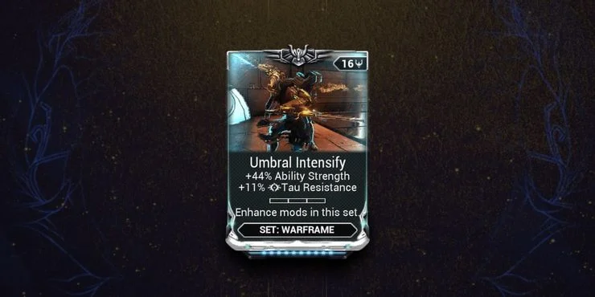
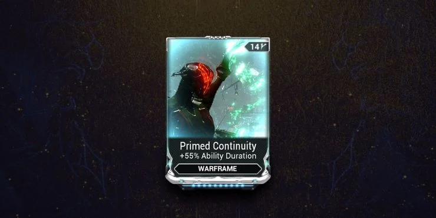

Must-Have Mods
Damage Mods
It should come as no surprise that damage-scaling Mods are worth using in Warframe. Mods like Serration, Hornet Strike, and Pressure Point increase your weapon's overall damage by a large percentage. That alone makes them solid Mods, but these Mods truly shine when used alongside multishot and elemental Mods. Base damage Mods like Serration scale multiplicatively with elemental damage and multishot sources, giving your weapon a massive damage bonus. Serration, Split Chamber, and an elemental combo are all you need to push through the star chart and beyond. While these Mods become obsolete once you unlock Weapon Arcanes, they nonetheless serve a crucial role in upgrading your weapons for most of your journey.
Multishot Mods
Multishot Mods are just as important—if not more important—than raw damage Mods. Multishot gives your weapons a chance to fire multiple bullets with each trigger pull. Not only does this multiply your damage output, but multishot also makes your weapons more likely to inflict a status ailment or land a critical hit since you have multiple chances of either occurring with each shot. Every weapon build you use should have at least one multishot Mod installed. Be sure to obtain the Galvanized variants of each multishot Mod as soon as you can.
Umbral Mods

After completing a late-game story quest titled "The Sacrifice", players will obtain these incredibly powerful Mods for use on any Warframe. Two melee Mods that are part of the Sacrificial set are also included. The Umbral set increases your Ability Strength, Armor, and Health. The Sacrificial set increases your melee weapon's damage, critical chance, and gives it a damage multiplier against Sentients. Not only are these Mods upgrades or sidegrades of their normal counterparts, but they are also part of a set. The more Mods from that set you use, the stronger they get. The problem is they use a unique Polarity that requires an extremely rare Umbral Forma to add it on, but it is worth the trouble involved. If you want to maximize your items, find a way to install these Mods into your builds.
Primed Critical Mods
Primed Target Cracker and Primed Pistol Gambit are the two strongest Mod upgrades players can get on their secondary weapons. This duo will increase your secondary's critical chance and critical multiplier by a hefty amount, making the most powerful secondary weapons even better. Both Mods are obtained from Baro Ki'Teer, a special merchant that appears in Relays every two weeks, similar to Xur from Destiny. While expensive, these Mods provide such a massive damage boost that they are worth every Ducat. You can earn Ducats by farming Prime parts and selling them at kiosks scattered throughout the Relays.
Aura Mods
Auras are unique Warframe Mods that grant your team a buff while increasing your Warframe's Mod capacity. Besides Stances, Auras are the only way to increase the capacity of a weapon in Warframe, hence why every build should have one installed. It's difficult to recommend a single Aura Mod since there isn't a definitive best one, so I'll give some recommendations: Steel Charge (Vazarin): Increases your team's melee damage and gives more capacity than most Aura Mods. Energy Siphon (Naramon): You and your allies regain 0.6 Energy per second. Brief Respite (Zenurik): Abilities grant a percentage of Energy spent as shields. This allows certain Warframes to utilize the shield gate mechanic to become nigh-invincible. Growing Power (Vazarin): You and your allies gain Ability Strength for six seconds whenever you inflict a status ailment.
Primed Continuity

Out of every Primed Warframe Mod currently available, Primed Continuity is arguably the best of the bunch. This Mod increases your Ability Duration by 55%, the second-largest increase out of every Ability Duration Mod. The real boon of Primed Continuity is it allows you to use Fleeting Expertise or Transient Fortitude with little consequence on your build, giving you more Mod space to add other stats into your build. If you can only afford one Primed Mod from Baro, purchase this one.
Elemental Damage Mods
Serration and Split Chamber might be massive damage multipliers, but elemental Mods are much easier to rank up and provide just as much damage. These Mods vary for each weapon type, but there is a Mod for each element: Toxin, Cold, Heat, and Electric. These Mods can be used together to create secondary elements such as Corrosive or Radiation. These damage types come with their own elemental effects and damage bonuses. Generally, Corrosive does massive damage versus armored targets, while Viral does amazing versus fleshier enemies. Combined with damage and multishot Mods, elements can increase a weapon's damage output by unimaginable amounts.
Fleeting Expertise
Warframe abilities are powerful, game-changing effects that everyone should use as often as possible. Most abilities cost Energy, however, and usually can not be spammed. That is unless you have high Ability Efficiency. Fleeting Expertise increases Ability Efficiency by a massive 60 percent while reducing ability duration by 60 percent. This bonus is one of the strongest in the game. Combined with Streamline, players can hit the efficiency cap and cast abilities at 25 percent of their normal cost. The negative duration can be countered with Primed Continuity, Narrow Minded, or other duration-based Mods. The easily countered negative makes this Mod one of the best in Warframe.
Vacuum And Fetch
Since Vacuum and Fetch are essentially the same Mod, both are taking our top spot. Both Mods don't increase your DPS or survivability at all. Instead, Vacuum and Fetch allow your Sentinels and pets the ability to grab all nearby loot passively. Tedious tasks relating to grabbing resources or credits are a thing of the past. This Mod will do all of that while also grabbing nearby ammunition, Health and Energy Orbs, and even Mods. Not only will these Mods make playing levels less frustrating, but they can even keep you alive by supplying you with constant ammo and nearby orbs.